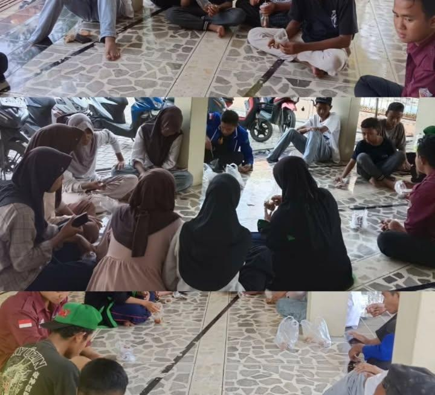
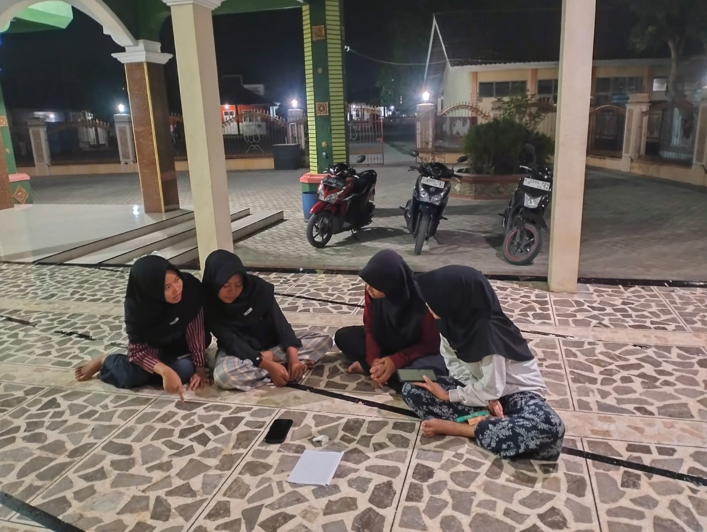
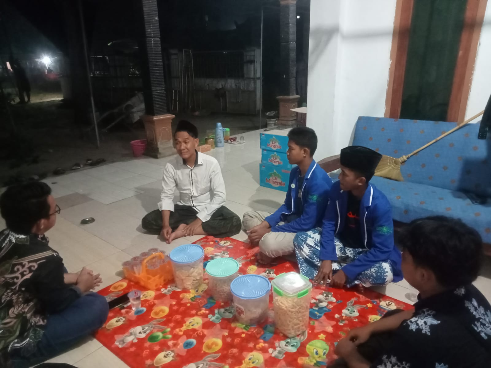
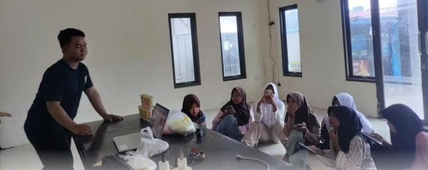
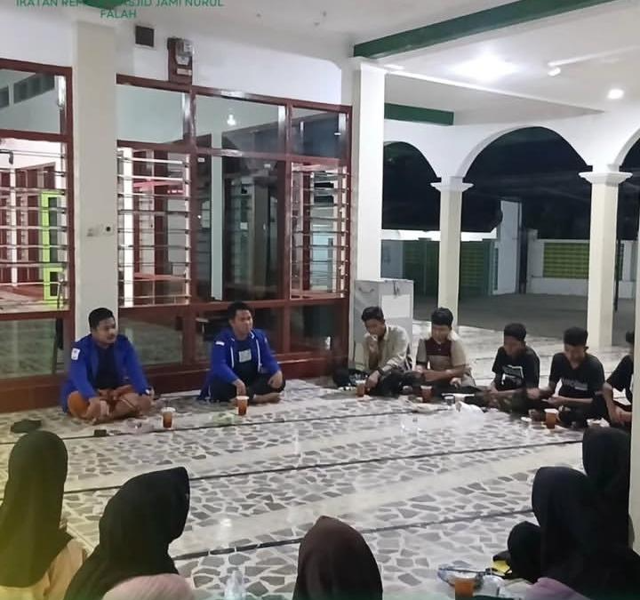
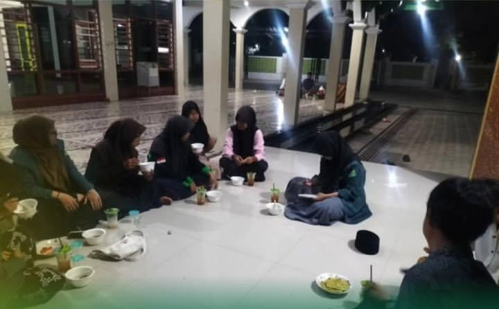

Meningkatkan kualitas sumber daya manusia IRMANUFA melalui pembinaan, pelatihan, dan evaluasi berkelanjutan
Monitoring dan evaluasi kinerja anggota setiap 3 bulan sekali.
Peningkatan kapasitas dan pemahaman peran pengurus.
Membangun mental dan kepemimpinan yang kuat.
Analisis kebutuhan pengembangan anggota secara berkala.
Program yang kami jalankan berdasarkan proker Divisi PSDM IRMANUFA
Monitoring dan evaluasi berkala
3 Bulan SekaliPenguatan kapasitas di awal masa jabatan
TahunanBimbingan dan pengembangan karakter anggota
BerkalaIkatan Remaja Masjid Jami' Nurul Falah
Desa Ujungjaya





Masjid Jami' Nurul Falah
Desa Ujungjaya
+62 812-3456-7890
(Dwi Fathi)
@irmanufa_official